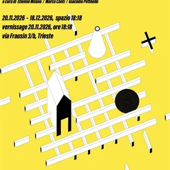

da ven 20 nov a ven 18 dic
Mostra "MAG+. Architetture in dialogo: processo e sovrascritture"
Venerdì 20 novembre, alle ore 18:18, inaugura presso 18:18 - Art across borders, in via Frausin 3/b, “MAG+. Architetture in dialogo: processo e sovrascritture”, una mostra ideata da Marco Conti, Etienne Milano e Giacomo Pettoello, studenti di architettura, e dedicata alle storie…
 Indicazioni
Indicazioni
- Costi e prenotazioni
- Costo non indicato · Prenotazione non indicata
- Programma
- Programma da verificare. Apri la fonte ufficiale per orari e possibili aggiornamenti.
- In caso di maltempo
- Nessuna indicazione specifica pubblicata.
- Note
- Acquisito automaticamente dalla fonte.
L’EVENTO
Descrizione completa
Venerdì 20 novembre, alle ore 18:18, inaugura presso 18:18 - Art across borders, in via Frausin 3/b, “MAG+. Architetture in dialogo: processo e sovrascritture”, una mostra ideata da Marco Conti, Etienne Milano e Giacomo Pettoello, studenti di architettura, e dedicata alle storie che precedono, accompagnano e modificano la forma di un progetto. L’esposizione sarà visitabile fino al 18 dicembre.
Ogni progetto architettonico custodisce una storia fatta di tentativi, riferimenti, intuizioni e ripensamenti, le cui tracce rimangono spesso ai margini dell’opera compiuta. MAG+ nasce dalla volontà di raccogliere e rendere visibile questa memoria, spostando l’attenzione dal risultato finale al processo che lo ha generato. “L’idea dell’esposizione nasce da un gesto semplice: guardarsi indietro – spiegano i curatori –. Dopo sei mesi dedicati a un progetto d’architettura, ci siamo ritrovati davanti a tutto ciò che ne aveva accompagnato la costruzione: schizzi, prove, tentativi, intuizioni. Materiali solitamente destinati a rimanere nell’ombra del risultato finale, nei quali abbiamo riconosciuto un valore inatteso. Ci ha sorpreso scoprire quanto potesse raccontare ciò che, fino a quel momento, avevamo trascurato”.
Schizzi, fotografie, disegni, materiali e modelli vengono accostati in un percorso espositivo che invita a scoprire nuove relazioni tra elementi differenti. Come nella città, dove architetture di epoche diverse convivono e acquisiscono nuovi significati attraverso la loro vicinanza, anche nello spazio espositivo materiali distanti per origine e natura concorrono alla costruzione di un insieme. La mostra si arricchisce inoltre dei materiali d’archivio selezionati in collaborazione con il Liceo Artistico Nordio, che contribuiranno ad ampliare i livelli di lettura dell’esposizione.
Caratteristica distintiva del progetto è la sua natura partecipativa e in continua evoluzione. A partire da un primo nucleo espositivo, la mostra crescerà durante il periodo di apertura grazie al contributo dei visitatori, invitati ad aggiungere immagini, disegni e pensieri. Lo spazio si trasformerà così progressivamente in un archivio collettivo, testimonianza di un processo condiviso di costruzione e sovrascrittura.
Il progetto espositivo sarà accompagnato da un programma di eventi collaterali che proporrà occasioni di incontro e sperimentazione, mettendo in dialogo architettura, linguaggi artistici, scrittura e ricerca audiovisiva. Maggiori informazioni sulla pagina Instagram @1818_artacrossborders. Ingresso riservato ai soci.
IL PROGRAMMA
Programma e orari
Appuntamenti raccolti dalle fonti elencate. Dove manca un orario, non è ancora disponibile in questa scheda.
Programma pubblicato
- Dal 2026-11-20 al 2026-12-18
INFORMAZIONI UTILI
Prima di partire
- Controllare la fonte prima di partire.
ORGANIZZAZIONE